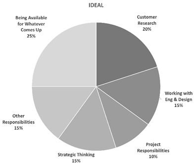
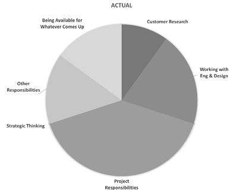
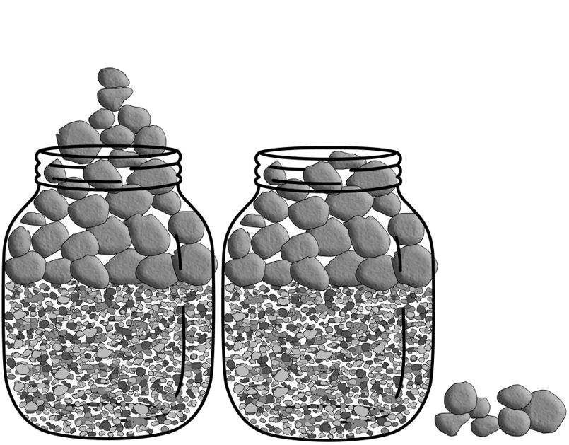

Chapter 13
Picture Jake. He’s a new PM, fresh out of a top college with a great GPA and great projects. Maybe he even had a successful internship at your company.
He gets off to a great start, doing all the things he needs to do. You picture him moving on up, gaining more and more responsibility.
But then, perhaps six to twelve months in, he starts to falter. Your super responsible PM is falling behind schedule. The work he does is excellent, but there’s so much he isn’t doing and needs to.
What’s gone wrong? Simply put: he’s struggling to get things done . Fortunately, this is a skill one can develop.
What does it mean to be a person who gets things done?
Getting things done isn’t about working nights and weekends. It’s about how you work. How do you manage what you do, and what people around you do? How do you work with others? It means that you avoid the traps that can block things from getting done. People who get things done tend to share the following traits.
It’s true that working longer hours is necessary at times, and that working more can compensate somewhat for weaknesses in some of these attributes. But still, if you aren’t action-oriented, reliable, high capacity, and results-oriented, you’ll struggle to get things done, even with long hours.
"Getting things done" isn’t just about your instincts or automatic behavior. Even if you are already tuned to work basically productively, there are strategies around how to be productive that can help you maximize this. Tracking your work and choosing work by priority are generally key aspects of any productivity system.
A great system for organizing your work is David Allen's Getting Things Done (GTD). 2 It has multiple components which can be picked up independently or all together.
We strongly encourage you to read Getting Things Done for more details; there’s a reason it’s a popular book among PMs.
Set dates for work that is important but not urgent
If something is due tomorrow, it's relatively easy to clear out some time to get it done.
On the other hand, something like a small usability bug in the signup flow might be important to fix, but on any given day, it's okay to push it out another day. Unfortunately, those days tend to add up, and when you realize the bug has been sitting around for months, the cumulative impact adds up to something that's no longer small.
To get past this predicament, try this thought exercise: how long would be too long for this work to go undone?
Once you have a time span in mind, set a due date that's a day sooner than "definitely too long". Of course, you can work on it earlier, but if not, once you get to the date, treat it as urgent.
Every product manager feels like they don't have as much time as they want, and yet every day PMs find ways to keep their teams running on the current work, to prepare upcoming work, to invest in strategic thinking, and to run a few extra projects or processes on the side.
Time management is the biggest blocker PMs face as they advance. You can't reach the higher levels of leadership until you learn how to carve out time for strategy. As a people manager, even more of your time gets absorbed by 1:1s and other meetings.
So, what's the secret?
It all comes down to accepting that we have more work to do than can actually be done, and then being intentional about what we choose to do.
Accept that you have more work to do than can actually be done
Acceptance is the first step in time management. If you insist on believing that you can get to every item on your to-do list if you simply work hard enough and smart enough, it will be too painful to prioritize what needs to be done.
Many PMs have gotten straight As throughout school, so it's hard to make the mental shift that taking a metaphorical B or C on some of your work is the right thing to do. But when your schedule is full, every piece of work you say yes to implicitly means saying no to something else.
Analyze your ideal vs. actual time allocation
For time management—as it is every problem we face in product management—it's a good idea to start with your goal. Once you know how you'd ideally spend your time, you can assess how you're actually spending your time and then come up with a plan to match your ideal. 3
Consider categories like:
These categories may well change over time, and that’s okay.
|
 |
 |
Once you've decided which categories to track, look at how you want to spend your time versus how you actually spend it:
When you do the math on your ideal time allocation, you’ll often find that your percentages add up to more than 100%. Here's where accepting that you can't do it all fits in. You’ll need to make some compromises to get to a realistic plan. Adjust the allocations until you feel good about your pie chart.
The 4 D's: delete, defer, delegate, and diminish
When you don’t have enough time for a responsibility, there are four ways to spend less time on it.
This decision is a natural and necessary consequence of having too little time to do everything. Be thoughtful about your choice, but don’t feel ashamed.
Imagine you've got rocks of all sizes that you're trying to fit into a jar. If you put the smaller rocks in first and let them fill up the bottom, the bigger rocks won't fit on top. But if you put the bigger rocks in first, the smaller rocks can fill in the gaps between the big rocks and you can get them all in.

The same goes for your responsibilities and tasks. If you start each day with the small five-minute tasks and throw in a few meetings, it'll be really hard to find three consecutive hours for deep focused work.
Instead, when planning your week, start by scheduling time for your most important work. As a PM, it really helps to block that time off on your calendar so it doesn't get filled in with meetings. It also adds a little internal pressure to actually use that time for the important work. Once you've fit your big tasks in, you can fit your smaller ones in between.
Proactively blocking off time on your calendar for your most important work can help you get uninterrupted time to get into the flow and take control of your day.
Get out of the office to make space for uninterrupted work
If simply blocking the time off on your calendar isn't working, creating a little more physical space might help. You can go work from a coffee shop, or hide away in a different corner of your office. Try blocking your notifications, and pretend you're working off the grid, or actually invite your team to an offsite strategy session in the woods. 4 Set your out-of-office indicator.
If you're feeling guilty about ignoring your team for a day, try this thought exercise: would you take a Friday off work if your friend were getting married? If your team can handle you taking a vacation day or a sick day, they can certainly handle you taking a strategy day to invest in the future of the team.
Justin Rosenstein, one of the co-founders of Asana, wrote about his three-step process for beating procrastination: 5
When you follow these steps, you'll find that, often, the next step is something easy that involves asking someone a question or looking something up. For example, if you're avoiding writing a spec, the next step might be something like "find the template" or "look at existing research."
The reason this works is that procrastination usually comes when something feels unclear and overwhelming. If you give yourself permission to look at the work without having to do it right then, you can usually break it down into pieces that aren't so scary.
New PMs sometimes think their job is to get the right people into a room, and then to let them make a decision. Or they think they should escalate every important decision to someone above them. Neither of these is effective. As a PM, you're responsible for becoming the expert in your area, analyzing tradeoffs, and forming a point of view.
Your point of view is one of the most valuable things you can add as a PM. You've taken the time and made the investment so that everyone else doesn't have to. If you don't have a strong point of view, you're pushing the responsibility for research and thinking onto someone else, and they probably have better things they could be doing with their time.
No matter how opinionated your coworkers are, they don't actually want to make the decision for you. They want you to understand their point of view, and they want to be able to trust you to make the decision that is best overall. The best outcome is when you can efficiently explain all of the different points of view and why you've come to the conclusion that you did.
Your point of view won't always be right, and that's okay. You'll learn from the times when your decisions get overturned or your recommendations don't get chosen.
New PMs often hit a roadblock and just stop. Maybe an engineer said it couldn't be done. Perhaps the research team said they have no time to help. Maybe marketing said something more important came up. You might be used to following the rules and it doesn't occur to you that there are other ways to get things done.
In reality, PMs can do a lot to get past roadblocks. This often feels like, "You can do that? I didn't realize that was an option!"
To get around a roadblock, consider these approaches:
When you overcome a roadblock, you help your team move forward so you can all achieve your goals.
Keep or renegotiate your commitments
When you tell someone you'll get something done, that's making a commitment. An important part of being reliable is doing what you say you'll do.
If you keep your commitments, you'll be seen as reliable and be valued for all you get done. If you don't, you create extra work for the people who need to check up on you and you'll lose credibility.
Write your commitments down in your productivity system. Add dates or reminders so you won't forget them. If you fall behind, let people know as soon as possible, and work out a new plan with them. Don't let the deadline go by without saying anything.
Let stakeholders know as soon as something important changes or you hit an important milestone. Even if everything is going according to plan, you should still send regular updates so that they don’t worry or don’t need to ask.
Proactive communication is particularly important with your manager as it’s one of the primary ways they'll assess your autonomy. If you're feeling micromanaged, that is often because you haven't been proactive enough with your communication.
Taking on multiple teams is a straightforward way to increase scope. You're responsible for more people, and with more teams, you can launch more products.
The biggest blocker to expanding your scope in this way is often emotional. You might worry that you're letting your current teammates down if you pick up more work and become less available. Talk about your fears with other PMs you trust.
Have you ever worked with a product leader who seemed to slow you down? Maybe they kept sending you off on tangents to gather more data, or forced you to spend more time iterating when the work was already good enough. Maybe they kept you waiting forever on decisions so you were blocked and couldn't move forward, or maybe they were way too busy, but still needed to approve every last detail.
Don't be that kind of product leader.
When you move into leadership, it's your responsibility to keep teams moving quickly. Pay attention to how your feedback and requests might slow a team down. Encourage people to tell you when they're blocked, and prioritize unblocking them.
"I've clearly done this wrong. There's no good solution," complained a new PM one day to Josh Kaplan, former GPM at Dropbox. "That's okay," Josh replied, "You didn't fail; you just need to grapple with the tradeoffs now."
As a PM, you won't be handed discrete tasks. You need to figure out for yourself what needs to be done and how to do it. When you talk to other people, you can't assume they understand your assignment or the background context. There's no single right answer. You'll need to think deeply about the tradeoffs. Recognize that you're solving a brand new problem.
Focus on outcomes, not deliverables
In school, your grades were all about deliverables; if you did what you were supposed to do, you got an A. As a product manager, that's not how it works.
If you create a spec but people don't read and follow it, it doesn't matter how good the spec was in the first place. If your team launches by the deadline but you don't hit your success metrics, your job isn't done yet. Getting to the desired outcome might include a lot of work other than just handing over deliverables.
Nearly every PM learns this lesson the hard way.
It takes a lot of courage to share work before it's done and polished. It can also take a lot of humility to consider that your first approach might be going down the wrong path entirely. If you don't share your work early, though, you risk wasting days or weeks of work.
To make it easier to share work early:
Keep in mind that the longer you wait, the greater pressure there is on the final deliverable—and the greater chance of it being significantly offbase.
Prioritize being responsive to your team
In other roles, you might be able to put on headphones and ignore people all day while you’re in flow. PMs don’t have this luxury; they would slow down their team if they did that. Often, other people can't move forward without PM input.
If you're suffering from inbox overload, find a way to filter the important notifications that need your response from the rest.
If it's difficult to filter automatically, you can let your team know the best way to reach you, and encourage them to reach out when they need you. Sometimes, teammates notice that you're busy and try not to bother you, even when you'd like them to. Be sure to reinforce that they're your top priority and that you do have time for them.
Be intentional about how you use real-time and asynchronous communication
Real-time communication is when everyone is in the conversation at the same time, like a face-to-face conversation or a meeting. Asynchronous (or async) communication is when one person sends a message, like a chat or email, and they're not sure when the other person will read it and reply. Each type can be valuable when used correctly.
Benefits of real-time communication:
Benefits of async:
You can add a lot of value by switching real-time discussions to async, and vice versa. A recurring meeting might be better as an async check-in. An email thread that's going back and forth might be quickly resolved by a quick chat.
Use " timeboxing" when you need to balance how long to spend on something
Timeboxing is a simple technique where you agree on the maximum amount of time you want to spend on something before you start working, and then you cut off the work if it takes longer than that. You can use it for any kind of task, from engineering work to decision-making.
Timeboxing works well because it lets you control the cost of work and therefore, your return on investment. It's much easier to be rational about how long to invest in a piece of work before it's started, especially because it avoids the sunk-cost fallacy. It helps codify the common goal of "we'll do it if it's cheap."
For example, you can timebox the amount of time you'll spend fixing a rare browser bug to three hours. The engineer will try to fix the bug for up to three hours, and after that, they'll move on to something else, even if the bug isn't fixed. Timeboxing avoids the unpleasant surprise of finding out an engineer is still working on the "easy" bug a week later.
Pay attention to the times when you're slow to take action, and find the root cause.
Here are some common opportunities where PMs can be more action-oriented.
It doesn't seem like anyone is waiting for your decision
In practice, any uncertainty usually slows people down. This happens even when the uncertainty shouldn't directly affect what they're working on at the time. It's hard to work at full speed when you're worried that something might change, or you don't have a clear view of where you're going. So, even if people aren't blocked on you, it's still a good idea to drive to clarity quickly.
Creating fancy frameworks when simple judgment would do
I've seen PMs create a complex formula for prioritizing work and then spend a week reformulating it when the results didn't make sense. I've seen teams spend days trying to pick precise numbers to use for launch criteria.
In many cases, you can save a lot of time by allowing for judgment calls. If the ranking isn't quite right, move things around. Set rough guidelines for the launch criteria and have a conversation if the results are borderline. Loosen up your framework to catch the most important cases without being too precise on the other buckets.
Some projects get stuck in the design phase. The designer shows their work to other designers, and then spends weeks trying to address every piece of internal feedback.
Regroup with your designer after they show their work to decide what feedback needs to be addressed. Help them see the balance between iteration and getting work in front of customers sooner. Support them in moving forward.
"Trust, but verify" during cross-functional collaboration
Cross-functional collaboration is a tricky part of product management. You're trying to get things done, but you're relying on someone else.
If you hand over some work to another team and then don't check back with them until launch day, chances are something will go wrong. Maybe one of the goals was misunderstood, or the work is running behind, or something urgent came up and they forgot about the work for your launch.
If you treat the other team like they're incompetent and try to micromanage them, they probably won't want to work with you again.
Instead, start from a place of mutual trust and respect, but set up some checkpoints where you can verify that things are going as expected.
When done well, delegation can be a win-win. The work that feels tedious to you might be an exciting growth opportunity for someone else. You might be able to pass along responsibilities to more junior PMs, or even designers and engineers.
Hand over ownership of a full responsibility
You should try to hand over ownership of a full responsibility, rather than farming out individual tasks.
For example, instead of asking someone to add a few specific charts to a dashboard, tell them about your goals for the dashboard and the problems with the current one, and then put them in charge of the dashboard. You can share your ideas, but give them space to come up with even better approaches. Agree on some checkpoints so you can make sure they're on the right path.
They'll get the satisfaction of owning the dashboard rather than feeling like they're doing you a favor. You'll get better results and better morale.
Understand your reluctance to delegate
Sometimes, the biggest hurdle a PM faces to delegation isn’t convincing someone else to take on the work, but rather convincing yourself that you can and should delegate this. If you’re hesitating to delegate work, consider why. Some common reasons to be reluctant include:
Not everything must be delegated, but most people are not delegating as much as they can or should. Be thoughtful about why something that could be delegated isn’t.
Take responsibility for defining what success looks like, and delegate the solution to your designers and engineers
It's hard to get a lot done when your engineers ask you to figure out the wording for every error message in the product. Many PMs get stuck in this kind of tactical work, and it's a poor use of everyone's time. It wastes your time because you need to document extraneous, repetitive information. It wastes your teammates' time because they need to stop their work and wait for a response from you instead of making a reasonable guess.
As a PM, one of the best ways to delegate is to take responsibility for defining (and evaluating) success, and then asking your teammates to be responsible for coming up with a solution. For error messages, you might define success as all error messages using a specific component from the UI library and the text following the sentence structure of the existing error messages.
Teach your teammates how to answer questions on their own, including things like where to look up style guidelines and common components. If you don't already have a list of style guidelines and design principles, this might be the time to create them. If you're holding all the rules in your head, you're forcing yourself to be a bottleneck.
Finally, set up checkpoints to review the work to make sure it meets your definition of success. For example, you might ask them to show all of their new work at weekly demos or to let you know whenever new code is checked in. If the work doesn't meet your definition of success, reflect on whether you need a clearer definition of what success means, better training, or both.
Don't treat rules as set-in-stone ⚡
There's a myth many PMs implicitly believe that you're supposed to follow all the rules and processes. After all, rules are meant to be followed, right? As it turns out, no. Not always.
As a PM, you're measured by the outcomes you create. If you break a rule and something goes wrong, you will probably just be told not to do that again. As many people say, it's easier to ask for forgiveness than to get permission.
Use your judgment and ask your coworkers to learn which rules are bendable, and only do it when you feel confident that the benefit is worth the risk. 6
Get your team excited about what comes next ⚡
When people are focused only on their current work, they often want to take the time to get it just right. It doesn't seem like there's any downside to taking an extra week to polish a corner case or do more research. It can be hard to get their buy-in to be more action-oriented because it seems like all risk and no reward.
When you're faced with this, it can help to spend time with your team envisioning the amazing long-term future you're building towards. This will help build up some enthusiasm for the work that comes next. When your teammates are excited about the next project, they'll start to share your eagerness to move more quickly, and they'll see the benefit in being more action-oriented.
Share your monthly priorities with your team ⚡⚡
As you advance in your career, it becomes harder for those around you to know what you're working on.
You can share a brief update on your priorities for each month (and how you did on last month's priorities) with the people on your team, your manager, and your cross-functional partners. This achieves a few goals:
Some PMs send updates on the priorities as they go; others write a summary at the end of the month.
Set up regular workshop time to optimize your schedule ⚡⚡
As a product leader, you might hit a point where 1:1s and ad-hoc meetings aren't enough to support your teams.
One way to scale is to set up pre-defined weekly "workshop" hours, where teams can sign up to bring product topics to you and the engineering and design leaders. This ensures the right people are in the room for product discussions and frees up your 1:1s to be more about personal development.
It often takes some iteration to make workshop hours effective for you and your team. Figure out who should attend and how often teams should bring their work. Consider using the Do/Try/Consider framework to make your feedback clear. 7
Clear roadblocks for your team ⚡⚡
Once you've built relationships across the organization and earned credibility, you can use those relationships to clear roadblocks for your team.
When cross-functional collaboration seems to be getting stuck, try bringing it up semi-casually with the leader of that function to see if they're aware of the problem. They might be able to understand what's going wrong and help you fix the problem.
For example, one PM was frustrated because his data scientist was taking a long time to analyze the results of an experiment. The PM's manager talked to the head of data science and explained how important it was to get results quickly. The head of data science was able to redistribute some work and the PM got their analysis the next day.
To do this well, you want to ensure that the tone is one of collaborative problem solving and helping each other out, not tattling. If it seems like you're blaming the person on the other team, you might make things worse by creating animosity.
In March 2020, many PMs found themselves facing a new reality as companies switched—abruptly—to work-from-home during the coronavirus pandemic. For Dian Rosanti, Senior VP of Product Management at Gojek, leading teams while remote was nothing new. Rosanti had been working with geographically dispersed teams for the past seven years and had built up a library of best practices. By thoughtfully adjusting to the new pressures of a pandemic and social isolation, she was able to help her team and herself stay effective, and share what she learned with other PMs. 8
Here are Rosanti's best practices for remote work:
Even with all the best practices, working in a pandemic is not the same as ordinary remote work. Rosanti found that her team needed to revisit objectives and compress prioritization cycles to help the business adapt. From a personal perspective, she also emphasized the importance of managing one's time and energy: flexible schedules, frequency goals, putting everything on a calendar, and practicing gratitude helped her adjust to the isolation. 10
1 . Tech companies use the word "scrappy" to mean quick and resourceful, for example, finding clever alternate solutions to work around constraints.
2 . Read more about Getting Things Done at https://gettingthingsdone.com/ .
3 . I expand on this at https://wavelength.asana.com/workstyle-time-management/ .
4 . Read more about this at https://medium.com/building-asana/working-from-woods-35236950d100 .
5 . Rosenstein expands on this at https://www.linkedin.com/pulse/20140121123613-25056271-tasks-down-how-to-overcome-procrastination-by-facing-discomfort/ .
6 . Obviously, don't break ethical, legal, or safety rules.
7 . Read more about this at "The "Do, Try, Consider" framework for product feedback" in Chapter 28
8 . Watch "Product Management in the Time of Corona" from GoTalk at https://www.youtube.com/watch?v=4MmJ1w3Z_yY
9 . #capital_hill was a delightful, surrealist chat room at Asana where we would debate whether a taco is a sandwich and other random ideas.
10 . An example of frequency goals is committing to exercise three times a week, without setting a fixed time.